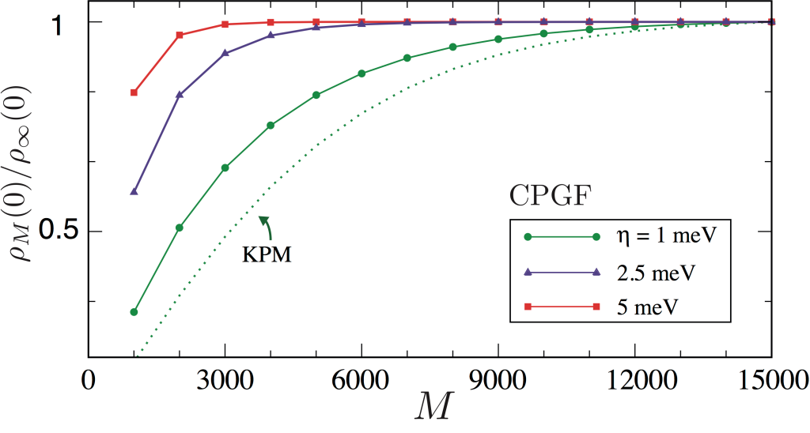

Spectral Methods
The physical properties of molecular and condensed systems are encoded in the eigenvalues and eigenfunctions of Hamiltonian matrices \(\hat{H}\) with large dimension \(D\). Direct evaluation of spectral properties and correlation functions generally requires memory of the order of \(D^2\) and the number of floating point operations scale as \(D^3\). Such a large resource consumption clearly restricts the type and size of systems that can be handled by exact diagonalization techniques. Spectral methods offer a powerful and increasingly popular alternative. In the spectral approach, the target functions of interest are decomposed into a spectral series
where \(P_n(E)\) are orthogonal polynomials. The elegance and power of spectral decompositions lie in the fact that the expansion moments \(f_n\) can be obtained by means of a highly-efficient and stable recursive scheme. Chebyshev polynomials of the first kind:
and \(x \in [−1:1] \equiv L\) are a widely used basis functions to approximate generic (non-periodic) functions defined on finite intervals given their unique convergence properties and relation to the Fourier transform1. It is easy to verify that the Chebyshev polynomials of first kind satisfy the orthogonality relations:
and thus form a complete set on \(\mathcal{L}\). These relations allow to define the numerically convenient spectral decomposition: \(f(x)=\omega(x)\sum\limits_{n=0}^\infty \frac{2 \mu_n}{1+ \delta_n} T_n(x)\), where \(\mu_n\) are the so-called Chebyshev moments defined by the overlap \(\mu_n = \int_\mathcal{L} dx f(x) T_n(x)\). Efficient numerical implementations evaluate Chebyshev moments "on-the-fly" exploiting the highly stable recursive procedure \((1)\). The recursion finishes when the number of calculated moments allow to retrieve the target function with the desired accuracy.
The extension of these concepts to operators (matrices) allows TB calculations to be carried out for extremely large systems bypassing direct diagonalization. For example, the Chebyshev expansion of the familiar "spectral operator" \(\delta(E−\hat{H})\) is given by2:
where \(||\hat{H}|| \leq 1\) has been re-scaled to guarantee that its spectrum falls into the spectral interval \(E \in [−1:1]\). In the above, the operators \(T_n(\hat{H})\) are defined by the matrix version of the standard Chebyshev recursion relations
The spectral decomposition (4) allows straightforward determination of several important quantities, for example, the DOS:
The Chebyshev moments \(\mu_{n}=\operatorname{Tr} T_{n}(\hat{H}) /\left[D\left(1+\delta_{n, 0}\right) / 2\right]\) are evaluated recursively in two steps. First, a series of matrix-vector multiplications is carried out to construct the Chebyshev matrix polynomials using \((2)\). For typical sparse Hamiltonian matrices, the complexity of this step is \(Z \times D\) (per Chebyshev iteration). Secondly, at the end of each recursive step \(n \rightarrow n + 1\), the overlap (trace) is evaluated using an efficient stochastic approach; see below. The knowledge of the Chebyshev moments then allows to reconstruct the DOS over a grid of energies.
Crucially, Chebyshev expansions enjoy from uniform resolution due to errors being distributed uniformly on \mathcal{L}1. In principle, the spectral resolution is only limited by the number of moments retained in the expansion. As a rule of thumb, the resolution is inversely proportional to the number of moments used, \(\delta E \propto \Delta / M\), where \(M−1\) is the highest polynomial order and \(\Delta\) is the original spectrum bandwidth (prior to re-scaling). In some situations, a higher number of moments may be required to converge to a good accuracy (e.g., near a singularity in the DOS).
Truncated spectral representations often present spurious features known as Gibbs oscillations (Fourier expansions) and Runge phenomenon (polynomial expansions). A well-known example is the "ringing" artifact in the Fourier expansion of a square wave signal, which persists irrespective of the number of coefficients in the series. Gibbs oscillations can be cured using specialized filtering techniques. An increasingly popular approach in quantum chemistry and computational condensed matter physics is the kernel polynomial method (KPM)2. As the name suggests, the KPM makes uses of convolutions with a kernel to attenuate the Gibbs oscillations, e.g., for the DOS, \(\mu_n \rightarrow \mu_n \times g_n\). The kernel \(g_n\) must satisfy a number of general conditions to guarantee that the approximate function \(f_M(x)\) converges to the target function \(f(x)\) uniformly as \(M \rightarrow \infty\). A typical example is the Lorentz kernel, \(g^L_n = \sinh(\lambda(1−n/M))/\sinh(\lambda)\), where \(\lambda\) is an adjustable parameter. It has the property that approximates nascent Dirac-delta functions \(\delta_\eta(x)\) by a Lorentzian with resolution \(\eta = \lambda / M\), and thus has been employed to damp Gibbs oscillations in spectral decomposition of broadened Green's functions2.
A powerful alternative is given by the Chebyshev polynomial Green's function (CPGF) method3, which is based on the exact spectral decomposition of the resolvent operator:
Differently from KPM, the spectral coefficients depend on the energy. Also, being an exact asymptotic expansion, the convergence of the \(M\)th-order approximation to \(G(E)\) to a given accuracy is guaranteed provided \(M\) is large enough. Figure 1 shows the convergence of the DOS at the band center \(E = 0\) of a giant honeycomb lattice with 3.6 billion sites and dilute random defects. The CPGF method is seen to converge faster than the KPM. More importantly, the CPGF expansion converges asymptotically at all energies (by contrast, the Lorentz kernel may lead to small errors away from the band centre).

Fig 1. Convergence of \(M\)-order approximation to the DOS at the band center of a giant honeycomb lattice with \(60000 \times 60000\) sites and vacancy defect concentration of 0.4% at selected values of energy resolution. As a guide to the eye, we plot the DOS normalized to its converged value (to 0.1% accuracy). As comparison, the DOS obtained from a KPM expansion with a Lorentz kernel is shown for \(\eta=1\) meV.The number of required moments \(M\) increases quickly as electronic states are probed with finer energy resolutions. This poses difficulties when evaluating complex quantities, such as linear response functions given by products of two Green functions (e.g., longitudinal conductivity4), especially at finite temperature/frequency (where off-Fermi surface processes are relevant)5 or when the system approaches a quantum phase transition3. To overcome this difficulty, KITE integrates a number of state-of-the-art algorithms.
The large-scale "single-shot" algorithm for direct evaluation of zero-temperature DC response functions at fixed Fermi energy. The algorithm bypasses the expensive recursive calculation of moments and thus can treat giant systems (\(N \propto 10^10\)) with fine resolution (\(M\) up to hundreds thousands). It can be applied to other quantities, such as DOS, local DOS and quasiparticle self-energy; a detailed description is given in Refs.3 and 6; a Chebyshev-moment approach based on double Chebyshev expansion of the Kubo-Bastin formula developed in5 gives access to finite temperature response functions of large systems up to ten millions of orbitals (with \(M\) up to tens thousands3); a detailed description of the algorithm is given in Ref.5 and its large-scale implementation in Ref.3. To speed up the evaluation of trace operation \(\operatorname{Tr}\{T_n(\hat{H})...T_m(\hat{H})\}\), KITE implements the stochastic trace evaluation technique (STE)2:
with random vectors \(|r\rangle=\sum_{i=1}^{N} \chi_{r, i}|i\rangle\). The random variables \(\chi_{r,i}\) are real- or complex-valued 2 and fulfill "white noise" statistics: \(\left\langle\left\langle\chi_{r, i}\right\rangle\right\rangle=0, \quad\left\langle\left\langle\chi_{r, i} \chi_{r^{\prime}, i^{\prime}}\right\rangle\right\rangle=0\) and \(\left\langle\left\langle\chi_{r, i}^{*} \chi_{r^{\prime}, i^{\prime}}\right\rangle\right\rangle=\delta_{r, r^{\prime}} \delta_{i, i^{\prime}}\).
The STE is extremely accurate for sparse matrices of large dimension (only a few random vectors are needed to converge to many decimal places), which allows substantial savings in computational time. For example, the evaluation of Chebyshev moments of the DOS function requires a total number of operations scaling as
The required number of random vectors depends on sparsity of the Chebyshev polynomial matrices \(T_n(\hat{H})\). For typical TB problems with \(Z \propto O(1)\), in the large system limit \((N \gg 1)\), a single random vector is often enough to achieve accuracy of 1% or better3. In fact, for sparse matrices, the STE relative error has the favorable scaling \(1 / \sqrt{RN}\). On the other hand, the number of moments required to converge the expansion depends strongly on the desired resolution, \(\eta\). As a rule of thumb, \(M\) should not be smaller than a few times the linear dimension of the system \(N^{1/D}\), where \(D\) is the number of spatial dimensions, which then leads to:
allowing a dramatic reduction in computational time w.r.t. direct diagonalization techniques, especially in \(D \geq 2\).
-
Chebyshev and Fourier spectral methods, John P. Boyd, 2nd Ed. Dover 5, New York (2001). ↩↩
-
Kernel polynomial method, Alexander Weiße, Gerhard Wellein, Andreas Alvermann, and Holger Fehske. Rev. Mod. Phys. 78, 275 (2006). ↩↩↩↩
-
Critical delocalization of chiral zero energy modes in graphene, A. Ferreira and E. Mucciolo, Phys. Rev. Lett. 115, 106601 (2015). ↩↩↩↩↩↩
-
Unified description of the dc conductivity of monolayer and bilayer graphene at finite densities based on resonant scatterers, A. Ferreira et al., Phys. Rev. B 83, 165402 (2011). ↩
-
Real-Space Calculation of the Conductivity Tensor for Disordered Topological Matter, J. H. García, L. Covaci, and T. G. Rappoport, Phys. Rev. Lett. 114, 116602 (2015). ↩↩↩
-
High-resolution real-space evaluation of the self-energy operator of disordered lattices: Gade singularity, spin–orbit effects and p-wave superconductivity, S M João, J. M. Viana Parente Lopes, and A. Ferreira, J. Phys. Mater. 5 045002 (2022). ↩